คู่มือใช้งานเครื่องมือ · ระดับ Free
การสูญเสียพลังงานในระบบส่งจ่าย
Distribution Loss Calculator
FREE
สำหรับช่างเทคนิคที่เพิ่งเริ่มงาน — อ่านแล้วทำตามได้เอง
ใช้เวลาฝึกประมาณ 60 นาที
เคสตัวอย่าง: โรงงาน A ท่อไอน้ำ 7 barg ยาว 100 m เปลือย → หุ้มฉนวน (ข้อมูลสมมุติ)
อ.หนึ่ง กลับทวี / Aj. Nueng Klubtavee
tripleeenergytools.com
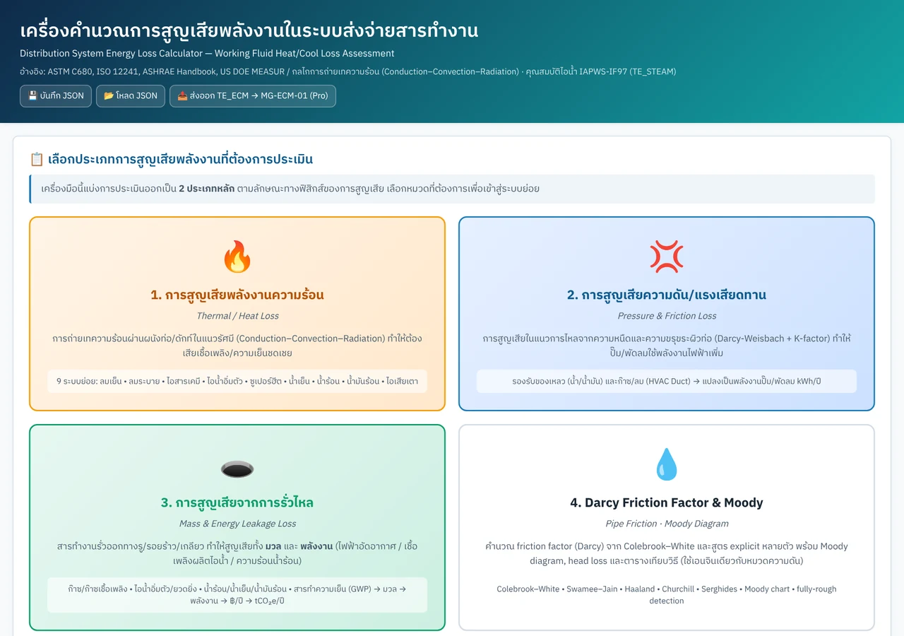
หน้าจอเครื่องมือ — เปิดได้จากเมนู Free ของเว็บไซต์
รุ่นเครื่องมือ: Free commit d9dee9f · จับภาพ 17 พ.ย. 2569 · คู่มือ Rev00
เครื่องมือนี้ตอบคำถามอะไร
คู่มือใช้งาน · คำนวณการสูญเสียพลังงานในระบบส่งจ่าย (Distribution System Energy Loss Calculator) · ระดับ Free
2 / 30
| คำถามหน้างาน | หมวดในเครื่องมือ | เคสในคู่มือได้ |
|---|---|---|
| ท่อ/ดักท์เสียความร้อนเท่าไร ต่อเมตร ต่อปี | 🔥 ความร้อน (9 ระบบ) | 879.9 → 57.6 W/m |
| หุ้มฉนวนแล้วประหยัดเท่าไร | 🔥 ความร้อน (คำนวณ 2 ครั้ง) | 690,024 ฿/ปี |
| ผิวท่อร้อนเท่าไร (ความปลอดภัย) | 🔥 ความร้อน | 170.3 → 47.3 °C |
| ท่อเล็ก/ข้อต่อมาก ปั๊มเสียไฟเท่าไร | 💢 ความดัน/แรงเสียดทาน | 6.223 kW · 168,024 ฿/ปี |
| รอยรั่วไอน้ำ/ลมอัด/ก๊าซ เสียเท่าไร | 🕳️ การรั่วไหล | 17.83 kg/h · 94,898 ฿/ปี |
| friction factor และ Moody diagram | 💧 Darcy/Moody | เทียบ 5 สูตร |
💡 เคล็ดลับ
เครื่องมือเดียวมี 4 หมวด — คู่มือนี้สอนหมวดความร้อนละเอียด (ท่อไอน้ำ) แล้วพาดูหมวดความดัน การรั่ว และ Moody ทีละหน้า
แผนที่หน้าจอ: หน้าหลัก
คู่มือใช้งาน · คำนวณการสูญเสียพลังงานในระบบส่งจ่าย (Distribution System Energy Loss Calculator) · ระดับ Free
3 / 30
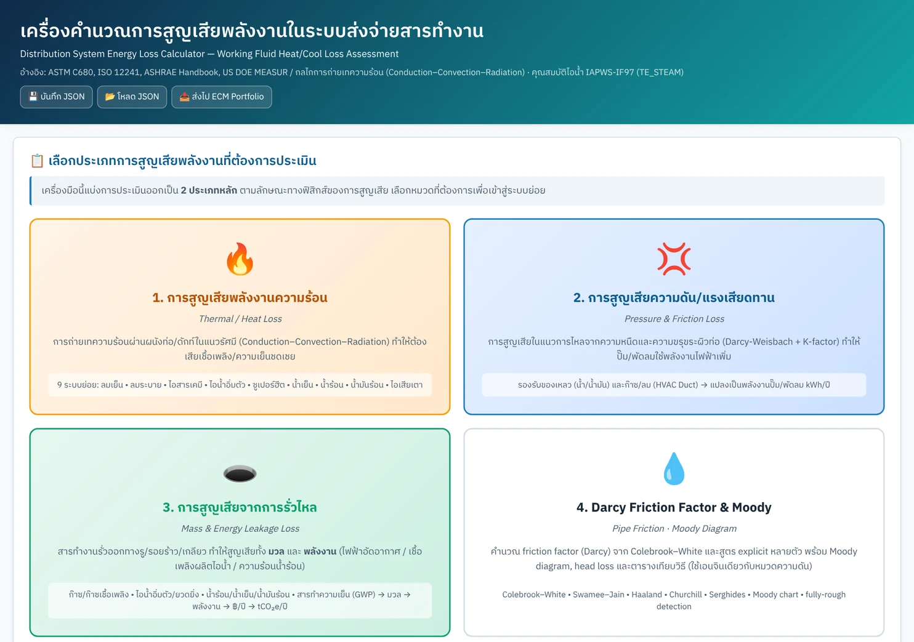
1
2
3
4
5
6
1
💾 บันทึก / 📂 โหลด JSON · 📤 ส่งไป ECM Portfolio
2
1. ความร้อน — ท่อ/ดักท์ 9 ระบบ
3
2. ความดัน/แรงเสียดทาน — ไฟฟ้าปั๊ม/พัดลม
4
3. การรั่วไหล — มวล → พลังงาน → ฿
5
4. Darcy friction factor & Moody
6
📚 ตารางอ้างอิงคุณสมบัติทางความร้อน
กดการ์ดเพื่อเข้าหมวด — กลับหน้าหลักได้ทุกเมื่อด้วยปุ่ม 🏠
⚠️ ระวัง
หน้านี้ไม่บันทึกข้อมูลไว้ในเครื่อง — ปิดหน้าแล้วค่าที่กรอกหาย เก็บงานด้วย 💾 บันทึก JSON
เปิดบนมือถือ และสลับภาษา
คู่มือใช้งาน · คำนวณการสูญเสียพลังงานในระบบส่งจ่าย (Distribution System Energy Loss Calculator) · ระดับ Free
4 / 30
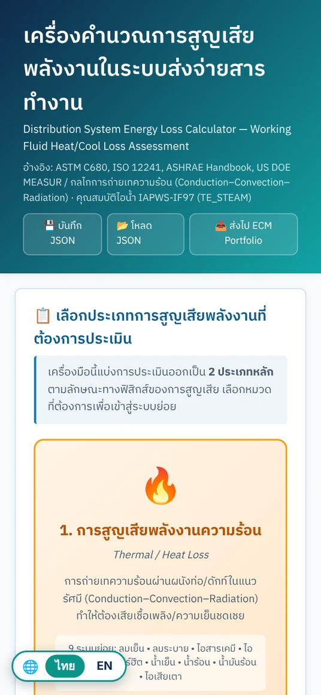
บนมือถือการ์ด 4 หมวดเรียงลงมาทีละใบ เลื่อนลงเพื่อเลือก
ช่องกรอกเรียงคอลัมน์เดียว — ขั้นตอนการคำนวณยาว เลื่อนอ่านได้
ปุ่ม ไทย | EN ลอยอยู่ด้านล่าง กดสลับภาษาได้ ค่าที่กรอกไว้ไม่หาย
💡 เคล็ดลับ
จดค่าหน้างานลงกระดาษหรือแบบฟอร์ม แล้วกรอกบนคอมพิวเตอร์จะเร็วกว่า — มือถือเหมาะเปิดดูผล
เมนูนำทาง: แถบหมวด และเลือกระบบย่อย
คู่มือใช้งาน · คำนวณการสูญเสียพลังงานในระบบส่งจ่าย (Distribution System Energy Loss Calculator) · ระดับ Free
5 / 30
1
2
3
4
5
6
1
🏠 กลับหน้าหลัก
2
🔥 ความร้อน (หมวดที่เลือกอยู่)
3
💢 ความดัน/แรงเสียดทาน
4
🕳️ การรั่วไหล
5
💧 Darcy/Moody
6
เลือกระบบย่อย — 9 ระบบในหมวดความร้อน
หมวดความร้อน: เลือก "🌫️ ระบบส่งจ่ายไอน้ำอิ่มตัว" สำหรับเคสโรงงาน A
แต่ละระบบมีปุ่ม 🔢 คำนวณ ของตัวเอง — ค่าที่กรอกในแต่ละระบบแยกกัน
ระบบย่อย 9 ระบบในหมวดความร้อน ต่างกันอย่างไร
คู่มือใช้งาน · คำนวณการสูญเสียพลังงานในระบบส่งจ่าย (Distribution System Energy Loss Calculator) · ระดับ Free
6 / 30
| ระบบ | รูปทรง | จุดที่ต่างจากระบบอื่น |
|---|---|---|
| ❄️ ลมเย็น (Chilled duct) | ดักท์สี่เหลี่ยม | ความร้อนรั่วเข้า → คิดไฟฟ้า Chiller ÷ COP |
| 💨 ลมระบายอากาศ | ดักท์สี่เหลี่ยม | ΔT น้อย ใช้วิธีเดียวกับลมเย็น |
| ⚗️ ไอสารระเหย/สารเคมี | ท่อกลม | กรอกอุณหภูมิไอโดยตรง |
| 🌫️ ไอน้ำอิ่มตัว | ท่อกลม | กรอกความดัน → T_sat อัตโนมัติ + คิด condensate |
| 🔥 ไอน้ำซูเปอร์ฮีต | ท่อกลม | อุณหภูมิลดตามความยาว และเตือนเมื่อเริ่มกลั่นตัว |
| 💧 น้ำประปา/น้ำเย็น | ท่อกลม | ความร้อนรั่วเข้า (น้ำเย็นคิด ÷ COP) |
| ♨️ น้ำร้อน | ท่อกลม | กรอกอุณหภูมิน้ำ |
| 🛢️ น้ำมันร้อน | ท่อกลม | อุณหภูมิสูง ΔT กับอากาศมาก |
| 🏭 ไอเสียเตา | ท่อ/ดักท์ | ผนังหลายชั้น — คิดเฉพาะการสูญเสียผ่านผนัง ไม่ใช่ศักยภาพนำความร้อนกลับ |
💡 เคล็ดลับ
ขั้นตอนกรอกเหมือนกันทุกระบบท่อ: ข้อมูลท่อ → ฉนวน → สภาวะ → 🔢 คำนวณ — ฝึกจากไอน้ำแล้วใช้กับระบบอื่นได้ทันที
คำศัพท์ 8 คำที่ต้องรู้ก่อนเริ่ม
คู่มือใช้งาน · คำนวณการสูญเสียพลังงานในระบบส่งจ่าย (Distribution System Energy Loss Calculator) · ระดับ Free
7 / 30
| คำ | ความหมายแบบสั้น | จำง่าย ๆ |
|---|---|---|
| q/L | ความร้อนที่เสียต่อความยาวท่อ 1 เมตร (W/m) | × ความยาว = W |
| R (m·K/W) | ความต้านทานความร้อน ต่อความยาว 1 m | R มาก = รั่วน้อย |
| k ฉนวน · k(T) | การนำความร้อนของฉนวน — เพิ่มขึ้นเมื่อฉนวนร้อน | k น้อย = ฉนวนดี |
| h_conv + h_rad | การพาความร้อน + แผ่รังสีที่ผิวนอก | ผิวร้อน → แผ่รังสีมาก |
| ε (emissivity) | ความสามารถแผ่รังสีของผิว 0–1 | อะลูมิเนียมต่ำ สีด้านสูง |
| T_s | อุณหภูมิผิวนอกสุด (ท่อเปลือยหรือผิวฉนวน) | ใช้ตรวจความปลอดภัย |
| Condensate | ไอน้ำที่กลั่นเป็นน้ำเพราะเสียความร้อน (kg/h) | = Q ÷ h_fg |
| ΔP major · minor | ความดันตกจากท่อตรง · จากข้อต่อ/วาล์ว | ปั๊มต้องชดเชยด้วยไฟฟ้า |
💡 เคล็ดลับ
จำภาพเดียว: ความร้อนไหลจากไอน้ำ → ผนังท่อ → ฉนวน → ผิวนอก → อากาศ ผ่านความต้านทานต่อกัน 3 ตัว (R_pipe + R_ins + R_out)
เตรียมเครื่องมือวัดและข้อมูลก่อนเริ่ม
คู่มือใช้งาน · คำนวณการสูญเสียพลังงานในระบบส่งจ่าย (Distribution System Energy Loss Calculator) · ระดับ Free
8 / 30
| ค่าที่ต้องมี | เครื่องมือ/แหล่งข้อมูล | ค่าโรงงาน A |
|---|---|---|
| ขนาดท่อ OD · ความหนาผนัง | แบบ/ตารางท่อ หรือวัดเส้นรอบวง ÷ π | 114.3 · 4.5 mm |
| ความยาวท่อที่ประเมิน | แบบ isometric หรือเดินวัด | 100 m |
| ความดันไอน้ำ | เกจที่ต้นท่อ (barg) | 7 barg |
| ฉนวน: ชนิด · ความหนา · ผิวหุ้ม | ตรวจหน้างาน เจาะดูจุดที่ซ่อมได้ | เปลือย → Rockwool 50 mm + อะลูมิเนียม |
| อุณหภูมิอากาศรอบท่อ | เทอร์โมมิเตอร์ (ในอาคาร/กลางแจ้ง) | 30 °C |
| อุณหภูมิผิว (ไว้ทวนสอบ) | เทอร์โมมิเตอร์อินฟราเรด / กล้องภาพความร้อน | เทียบกับ T_s ของเครื่องมือ |
| ชั่วโมงใช้งานต่อปี | บันทึกการเดินหม้อไอน้ำ | 7,000 ชม. |
| ราคาความร้อน ฿/GJ | ราคาเชื้อเพลิง ÷ ประสิทธิภาพหม้อไอน้ำ | 333 ฿/GJ |
⚠️ ระวัง
IR thermometer อ่านผิวอะลูมิเนียม/สแตนเลสเงาผิดมาก (ε ต่ำ) — ติดเทปสีดำหรือใช้หัววัดสัมผัสเมื่อต้องการค่าผิวจริง
ขั้นที่ 1
ข้อมูลท่อ ชั่วโมง และราคาความร้อน
คู่มือใช้งาน · คำนวณการสูญเสียพลังงานในระบบส่งจ่าย (Distribution System Energy Loss Calculator) · ระดับ Free
9 / 30
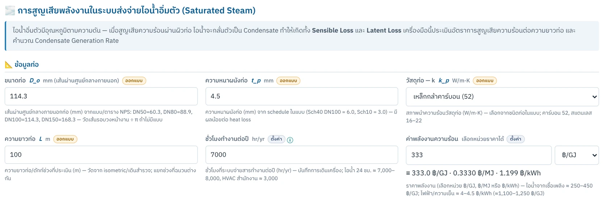
1
2
3
4
5
6
7
8
1
OD ท่อ (เส้นผ่านศูนย์กลางภายนอก) — 114.3 mm
2
ความหนาผนัง — 4.5 mm
3
วัสดุท่อ — เหล็กกล้าคาร์บอน
4
ความยาว — 100 m
5
ชั่วโมงใช้งาน/ปี — 7,000
6
ราคาความร้อน — 333
7
หน่วยราคา ฿/GJ · ฿/MJ · ฿/kWh
8
แปลงหน่วยให้ดู: ≡ 333.0 ฿/GJ · 0.3330 ฿/MJ · 1.199 ฿/kWh
ข้อความเทาใต้ช่องบอกที่มาของค่า และป้ายสีบอกชนิดค่า (วัดจริง · ออกแบบ · ตั้งค่า)
⚠️ ระวัง
ราคาที่กรอกคือราคาความร้อนที่ส่งออกจากหม้อไอน้ำ ไม่ใช่ราคาเชื้อเพลิงตรง ๆ — หารด้วยประสิทธิภาพหม้อไอน้ำก่อน
ขั้นที่ 2
ฉนวนและผิวนอก
คู่มือใช้งาน · คำนวณการสูญเสียพลังงานในระบบส่งจ่าย (Distribution System Energy Loss Calculator) · ระดับ Free
10 / 30
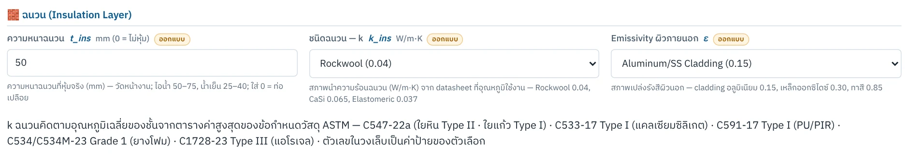
1
2
3
1
ความหนาฉนวน — 50 mm (0 = ท่อเปลือย)
2
ชนิดฉนวน — Rockwool (k ป้าย 0.04)
3
ผิวนอก ε — แผ่นอะลูมิเนียมหุ้ม 0.15
ท่อเปลือย: ใส่ความหนา 0 และเลือก ε ตามผิวท่อจริง (ทาสี/ผิวด้าน 0.85)
มีแผ่นหุ้มโลหะ: ε เป็นของแผ่นหุ้ม ไม่ใช่ของฉนวน
ฉนวนหลายชนิด: Rockwool · Glass wool · Calcium silicate · PU foam · Elastomeric foam · Aerogel
💡 เคล็ดลับ
ค่า k ในวงเล็บคือค่าป้าย — โหมดคำนวณตาม ASTM C680 (ค่าเริ่มต้น) ปรับ k ตามอุณหภูมิเฉลี่ยของฉนวนให้เอง
ขั้นที่ 3
สภาวะการใช้งาน แล้วกดคำนวณ
คู่มือใช้งาน · คำนวณการสูญเสียพลังงานในระบบส่งจ่าย (Distribution System Energy Loss Calculator) · ระดับ Free
11 / 30
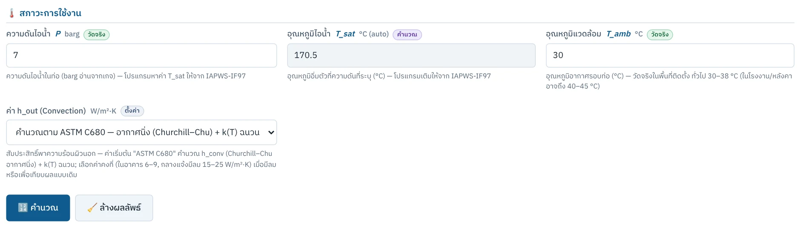
1
2
3
4
5
1
ความดันไอน้ำ — 7 barg
2
T_sat คำนวณให้ = 170.5 °C (IAPWS-IF97)
3
อุณหภูมิแวดล้อม — 30 °C
4
h_out — ค่าเริ่มต้น "คำนวณตาม ASTM C680" (อากาศนิ่ง)
5
🔢 คำนวณ
ความดันเป็น barg (เกจ) — เครื่องมือบวกความดันบรรยากาศให้เอง
h_out แบบตัวเลขคงที่ (6–50) ใช้ k ค่าป้าย ไม่ปรับตามอุณหภูมิ (ดู What-if)
⚠️ ระวัง
แก้ค่าแล้วต้องกด 🔢 คำนวณใหม่ — เครื่องมือขึ้นป้าย ⚠ ว่าผลด้านล่างยังเป็นของค่าเดิม
ขั้นที่ 4
อ่านขั้นตอนการคำนวณ
คู่มือใช้งาน · คำนวณการสูญเสียพลังงานในระบบส่งจ่าย (Distribution System Energy Loss Calculator) · ระดับ Free
12 / 30
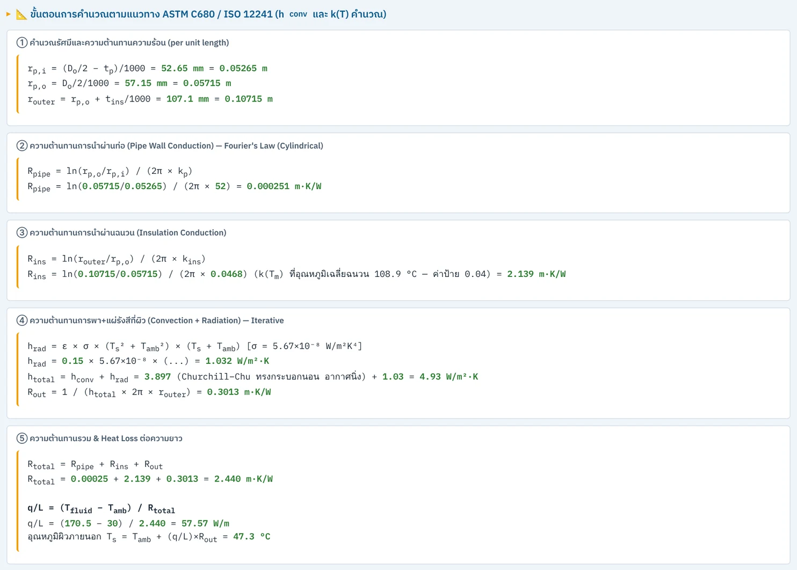
1
2
3
4
1
R_pipe ผนังเหล็ก = 0.000251 m·K/W (น้อยมาก)
2
R_ins ฉนวน = 2.139 — k(T) 0.0468 ที่ 108.9 °C
3
ผิวนอก: h_conv 3.897 + h_rad 1.03 → R_out 0.3013
4
q/L = (T_sat − T_amb) ÷ R_total 2.440
ฉนวนรับความต้านทานเกือบทั้งหมด — ผนังเหล็กแทบไม่มีผล
ทุกบรรทัดแสดงสูตร → แทนค่า → ผล ตรวจทวนด้วยเครื่องคิดเลขได้
💡 เคล็ดลับ
ผิวอะลูมิเนียม ε 0.15 แผ่รังสีน้อย ผิวจึงร้อนกว่าผิว ε สูงเล็กน้อย แต่ความร้อนรวมต่ำกว่า (ดู What-if)
ขั้นที่ 5
ผลสรุป: หลังหุ้มฉนวน
คู่มือใช้งาน · คำนวณการสูญเสียพลังงานในระบบส่งจ่าย (Distribution System Energy Loss Calculator) · ระดับ Free
13 / 30
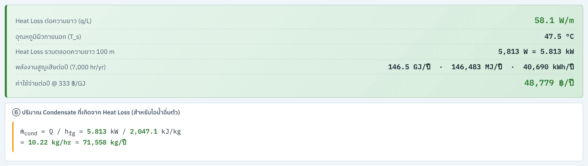
1
2
3
4
5
6
1
q/L = 57.6 W/m
2
T_s = 47.3 °C
3
รวม 100 m = 5.757 kW
4
ต่อปี 145.1 GJ = 40,301 kWh
5
ค่าใช้จ่าย 48,313 ฿/ปี
6
Condensate 10.12 kg/h
Condensate = Q ÷ h_fg = 5.757 kW ÷ 2,047.1 kJ/kg → 70,874 kg/ปี ที่ดักไอน้ำต้องระบาย
💡 เคล็ดลับ
ผลประหยัดของการหุ้มฉนวน = ผลก่อนหุ้ม − ผลหลังหุ้ม: กรอกท่อเปลือยแล้วคำนวณ จดผล แล้วจึงใส่ฉนวนและคำนวณอีกครั้ง
ผลสรุป: ก่อนหุ้มฉนวน (ท่อเปลือยทาสี)
คู่มือใช้งาน · คำนวณการสูญเสียพลังงานในระบบส่งจ่าย (Distribution System Energy Loss Calculator) · ระดับ Free
14 / 30
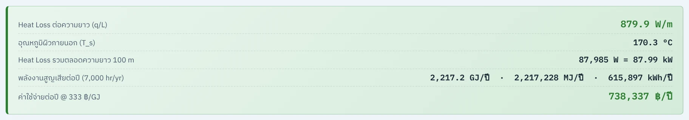
1
2
3
1
q/L = 879.9 W/m
2
T_s = 170.3 °C — เกือบเท่าไอน้ำ
3
ค่าใช้จ่าย 738,337 ฿/ปี
ใส่ความหนาฉนวน 0 และ ε 0.85 แล้วกด 🔢 คำนวณ
รวม 100 m = 87.99 kW · ต่อปี 2,217.2 GJ · condensate 154.7 kg/h
⚠️ ระวัง
ผิว 170.3 °C สัมผัสแล้วไหม้ทันที — ท่อเปลือยเป็นทั้งความสูญเสียและอันตรายต่อผู้ปฏิบัติงาน
สรุปผลประหยัดของการหุ้มฉนวน — โรงงาน A
คู่มือใช้งาน · คำนวณการสูญเสียพลังงานในระบบส่งจ่าย (Distribution System Energy Loss Calculator) · ระดับ Free
15 / 30
| รายการ | ท่อเปลือย | Rockwool 50 mm + อะลูมิเนียม |
|---|---|---|
| q/L (W/m) | 879.9 | 57.6 |
| T_s ผิวนอก (°C) | 170.3 | 47.3 |
| ความร้อนรวม 100 m (kW) | 87.99 | 5.757 |
| พลังงานต่อปี (GJ) | 2,217.2 | 145.1 |
| Condensate (kg/h) | 154.7 | 10.12 |
| ค่าใช้จ่ายต่อปี (฿) | 738,337 | 48,313 |
| ประหยัด | — | 690,024 ฿/ปี (93.5 %) |
ตัวเลขประหยัด = ค่าใช้จ่ายสองครั้งที่เครื่องมือคำนวณลบกัน
นำผลประหยัดไปคิดคืนทุนกับราคาค่าหุ้มฉนวนจากใบเสนอราคาจริง
💡 เคล็ดลับ
ตรวจผลด้วยการวัดผิวหลังติดตั้ง: ผิวจริงสูงกว่า T_s มาก = ฉนวนชื้น ยุบ หรือมีรอยต่อรั่ว
ลองเปลี่ยนค่า (What-if): ความหนาฉนวน
คู่มือใช้งาน · คำนวณการสูญเสียพลังงานในระบบส่งจ่าย (Distribution System Energy Loss Calculator) · ระดับ Free
16 / 30
| ความหนา Rockwool | q/L (W/m) | T_s (°C) | ค่าใช้จ่าย (฿/ปี) | ประหยัดเทียบท่อเปลือย |
|---|---|---|---|---|
| 25 mm | 90.9 | 60.4 | 76,247 | 89.7 % |
| 50 mm (ตามเคส) | 57.6 | 47.3 | 48,313 | 93.5 % |
| 75 mm | 44.7 | 42.1 | 37,485 | 94.9 % |
| 100 mm | 37.7 | 39.3 | 31,622 | 95.7 % |
ทำเอง: แก้ช่องความหนาฉนวน → 🔢 คำนวณ → จดผล → แก้กลับ
ยิ่งหนายิ่งประหยัด แต่เพิ่มทีละขั้นได้ผลน้อยลง — ความหนาที่คุ้มต้องเทียบกับราคาฉนวนแต่ละขนาด
💡 เคล็ดลับ
25 mm แรกให้ผลมากที่สุด — ท่อเปลือยทุกเส้นควรหุ้มก่อนคิดเพิ่มความหนาท่อที่หุ้มแล้ว
ลองเปลี่ยนค่า (What-if): ผิวหุ้ม ชนิดฉนวน ลม และความดัน
คู่มือใช้งาน · คำนวณการสูญเสียพลังงานในระบบส่งจ่าย (Distribution System Energy Loss Calculator) · ระดับ Free
17 / 30
| กรณี (จากเคส 50 mm) | q/L (W/m) | T_s (°C) | อ่านว่า |
|---|---|---|---|
| ตามเคส (อะลูมิเนียม ε 0.15) | 57.6 | 47.3 | ค่าอ้างอิง |
| ผิว ε 0.30 | 58.5 | 45.0 | ผิวเย็นลงเพราะแผ่รังสีมาก แต่เสียความร้อนมากขึ้น |
| Calcium silicate (k 0.065) | 70.6 | 50.5 | k สูงกว่า ความหนาเท่ากันกันความร้อนได้น้อยกว่า |
| h_out คงที่ 25 (กลางแจ้ง มีลม) | 54.9 | 33.1 | ต่ำกว่าเคส เพราะโหมดนี้ใช้ k ค่าป้าย |
| ท่อเปลือย + h_out 25 | 1,778.6 | 170.0 | ท่อเปลือยกลางลมเสียมากกว่าในอาคาร |
| ความดัน 10 barg | 64.6 | 49.0 | T_sat 184.1 °C → ΔT มากขึ้น |
ใช้ h_out แบบคำนวณ (ค่าเริ่มต้น) เป็นหลัก — โหมดตัวเลขคงที่ใช้เทียบกับผลงานเก่าเท่านั้น
⚠️ ระวัง
อย่าสรุปจากแถว h 25 ว่า "ลมช่วยลดความสูญเสีย" — ตัวเลขต่ำเพราะ k ไม่ได้ปรับตามอุณหภูมิ ขั้นตอนข้อ ③ ของเครื่องมือมีหมายเหตุนี้
ขั้นที่ 6
หมวดความดัน/แรงเสียดทาน: ข้อมูลท่อและการไหล
คู่มือใช้งาน · คำนวณการสูญเสียพลังงานในระบบส่งจ่าย (Distribution System Energy Loss Calculator) · ระดับ Free
18 / 30
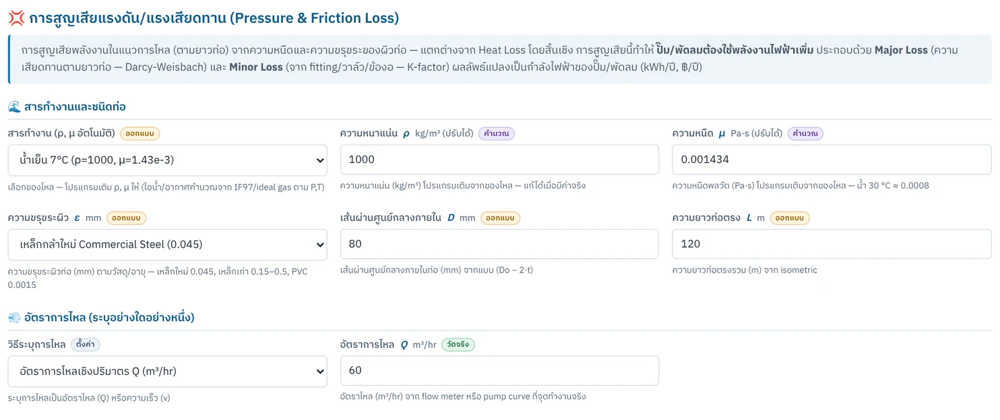
1
2
3
4
5
6
7
8
1
สารทำงาน — น้ำเย็น 7 °C (ρ, μ เติมให้)
2
ρ — kg/m³
3
μ — Pa·s
4
ความขรุขระ — เหล็กกล้าใหม่ 0.045 mm
5
เส้นผ่านศูนย์กลางภายใน — 80 mm
6
ความยาวท่อตรง — 120 m
7
วิธีระบุการไหล: Q หรือ v
8
Q — 60 m³/h
เคสฝึก (สมมุติ): ท่อน้ำเย็นโรงงาน A — ใช้ D ภายใน = OD − 2 × ความหนา
ไอน้ำ/อากาศอัด: เลือกจากกลุ่ม "คำนวณสด" แล้วกรอก P และ T
⚠️ ระวัง
กรอก OD แทน D ภายใน ΔP ต่ำกว่าจริงมาก เพราะ ΔP แปรตาม D ยกกำลังประมาณ 5
ข้อต่อ วาล์ว และข้อมูลปั๊ม
คู่มือใช้งาน · คำนวณการสูญเสียพลังงานในระบบส่งจ่าย (Distribution System Energy Loss Calculator) · ระดับ Free
19 / 30
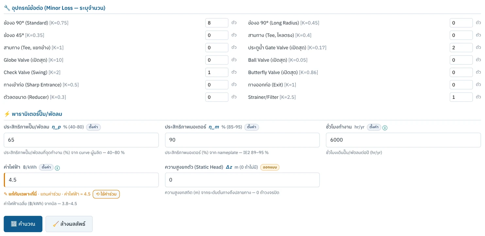
1
2
3
4
5
6
7
8
1
ข้องอ 90° — 8 ตัว
2
Gate valve — 2 ตัว
3
Check valve — 1 ตัว
4
Strainer — 1 ตัว
5
η ปั๊ม — 65 %
6
η มอเตอร์ — 90 %
7
ความสูงยกตัว — 0 m (วงจรปิด)
8
🔢 คำนวณ
นับข้อต่อจากแบบหรือเดินนับหน้างาน — ค่า K ของแต่ละชนิดอยู่ในวงเล็บ
ชั่วโมง 6,000 ชม./ปี · ค่าไฟ 4.5 ฿/kWh
💡 เคล็ดลับ
ความสูงยกตัวใส่เฉพาะระบบเปิดที่ส่งน้ำขึ้นที่สูง — วงจรปิดน้ำเย็นใส่ 0
ผลหมวดความดัน: ΔP และไฟฟ้าปั๊ม
คู่มือใช้งาน · คำนวณการสูญเสียพลังงานในระบบส่งจ่าย (Distribution System Energy Loss Calculator) · ระดับ Free
20 / 30
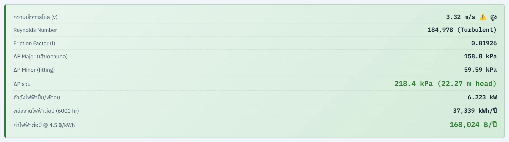
1
2
3
4
5
6
1
ความเร็ว 3.32 m/s
2
ΔP major (ท่อตรง) 158.8 kPa
3
ΔP minor (ข้อต่อ) 59.59 kPa
4
ΔP รวม 218.4 kPa (22.27 m)
5
ไฟฟ้าปั๊ม 6.223 kW
6
ค่าไฟ 168,024 ฿/ปี
Re 184,978 → ไหลปั่นป่วน · f = 0.01926 (Colebrook–White)
ไฟฟ้า = ΔP × Q ÷ η ปั๊ม ÷ η มอเตอร์ → 37,339 kWh/ปี
💡 เคล็ดลับ
ป้าย ⚠️ สูง หลังความเร็ว = เกิน 3 m/s (เกณฑ์ของเครื่องมือสำหรับของเหลว) — สัญญาณว่าท่อเล็กไปสำหรับอัตราไหลนี้
ลองเปลี่ยนค่า (What-if): ขนาดท่อ ข้อต่อ และความขรุขระ
คู่มือใช้งาน · คำนวณการสูญเสียพลังงานในระบบส่งจ่าย (Distribution System Energy Loss Calculator) · ระดับ Free
21 / 30
| กรณี | v (m/s) | ΔP รวม (kPa) | ไฟฟ้าปั๊ม (kW) | ค่าไฟ (฿/ปี) |
|---|---|---|---|---|
| ตามเคส (ID 80 mm) | 3.32 | 218.4 | 6.223 | 168,024 |
| ขยายท่อเป็น ID 100 mm | 2.12 | 76.17 | 2.170 | 58,594 |
| ไม่นับข้อต่อ (ลืมกรอก) | 3.32 | 158.8 | 4.525 | 122,187 |
| ท่อเก่ามีสนิม ε 0.5 mm | 3.32 | 331.5 | 9.444 | 254,977 |
ขยายท่อเพียงขนาดเดียวลด ΔP ได้มาก — ใช้ประเมินมาตรการเปลี่ยนท่อช่วงที่คอขวด
ลืมข้อต่อ = ประเมินไฟฟ้าปั๊มต่ำไป · ท่อเก่าขรุขระ = ΔP สูงขึ้นชัดเจน
⚠️ ระวัง
ผลนี้คือไฟฟ้าที่ใช้เอาชนะแรงเสียดทานในช่วงท่อที่กรอกเท่านั้น ไม่ใช่ไฟฟ้าทั้งหมดของปั๊ม · ปั๊มรอบคงที่ไม่ใช้ไฟลดลงเองเมื่อ ΔP ลด — ต้องปรับรอบ (VSD) หรือตัดใบพัดจึงได้ผลประหยัดจริง
ขั้นที่ 7
หมวดการรั่วไหล: รอยรั่วไอน้ำ
คู่มือใช้งาน · คำนวณการสูญเสียพลังงานในระบบส่งจ่าย (Distribution System Energy Loss Calculator) · ระดับ Free
22 / 30
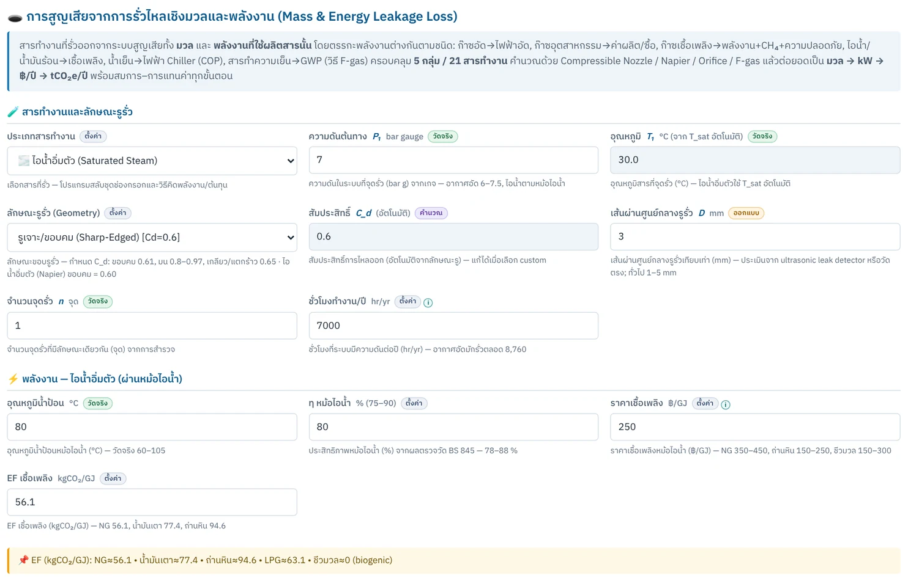
1
2
3
4
5
6
7
8
9
1
สารทำงาน — ไอน้ำอิ่มตัว
2
ความดัน — 7 barg
3
ลักษณะรู — ขอบคม
4
C_d — เติมให้ตามลักษณะรู
5
ขนาดรูเทียบเท่า — 3 mm
6
จำนวนจุด — 1
7
ชั่วโมงรั่ว/ปี — 7,000
8
η หม้อไอน้ำ — 80 %
9
ราคาเชื้อเพลิง — 250 ฿/GJ
ช่องด้านล่างเปลี่ยนตามสารทำงาน: ลมอัด → ไฟฟ้า · ไอน้ำ → เชื้อเพลิง · สารทำความเย็น → GWP
💡 เคล็ดลับ
ขนาดรูประเมินจากเครื่องตรวจรั่วอัลตราโซนิกหรือวัดตรง — ทั่วไป 1–5 mm (คำแนะนำใต้ช่องของเครื่องมือ)
ผลหมวดการรั่วไหล
คู่มือใช้งาน · คำนวณการสูญเสียพลังงานในระบบส่งจ่าย (Distribution System Energy Loss Calculator) · ระดับ Free
23 / 30
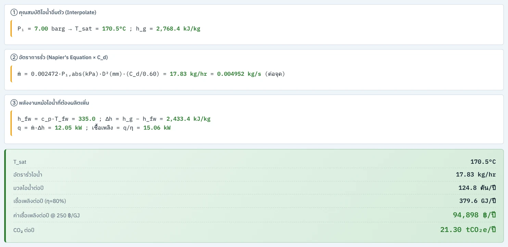
1
2
3
4
1
อัตรารั่ว 17.83 kg/h
2
เชื้อเพลิง 379.6 GJ/ปี
3
ค่าเชื้อเพลิง 94,898 ฿/ปี
4
CO₂ ต่อปี
T_sat 170.5 °C · ไอน้ำรั่ว 124.8 ตัน/ปี จากรู 3 มม. จุดเดียว
รู 5 mm: 49.52 kg/h = 263,606 ฿/ปี · ความดัน 3 barg (รู 3 mm): 8.93 kg/h
⚠️ ระวัง
อัตรารั่วแปรตามพื้นที่รู (D²) — รูโตขึ้นเล็กน้อยเสียเพิ่มมาก ซ่อมรอยรั่วไอน้ำทันทีที่พบ
หมวด Darcy Friction Factor และ Moody
คู่มือใช้งาน · คำนวณการสูญเสียพลังงานในระบบส่งจ่าย (Distribution System Energy Loss Calculator) · ระดับ Free
24 / 30
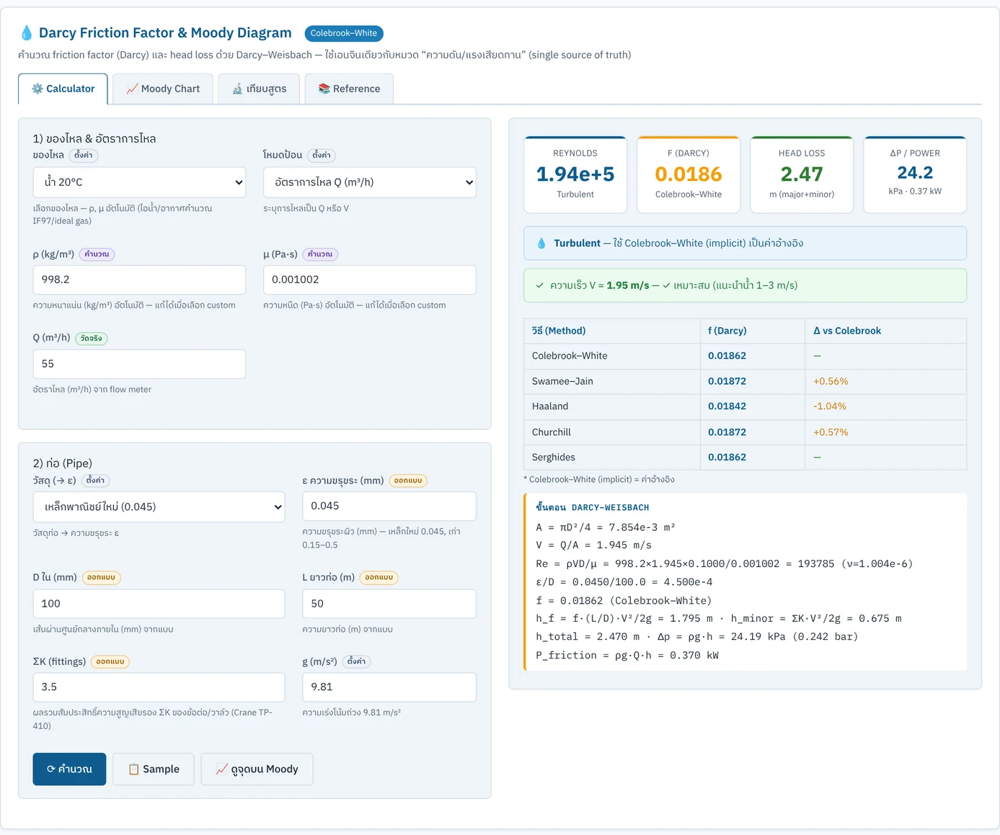
เปิดหมวดครั้งแรก เครื่องมือโหลดตัวอย่างให้ (น้ำ 20 °C) — กด คำนวณ หลังแก้ค่า
การ์ดบนขวาแสดง Re · f · head loss — ตารางเทียบ f จาก 5 สูตร (Colebrook–White เป็นค่าอ้างอิง)
แท็บ Moody Chart แสดงตำแหน่งจุดคำนวณบนแผนภูมิ Moody
💡 เคล็ดลับ
หมวดนี้ใช้เอนจินเดียวกับหมวดความดัน — ใช้ตรวจ friction factor เมื่อสงสัยผล หรือใช้สอนเรื่องการไหลในท่อ
ตารางอ้างอิงคุณสมบัติทางความร้อน
คู่มือใช้งาน · คำนวณการสูญเสียพลังงานในระบบส่งจ่าย (Distribution System Energy Loss Calculator) · ระดับ Free
25 / 30
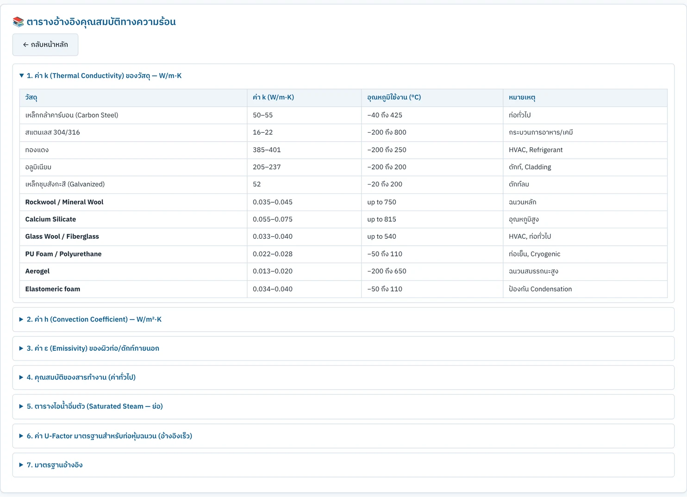
7 หัวข้อ: ค่า k ของวัสดุ · ค่า h · ค่า ε · คุณสมบัติสารทำงาน · ไอน้ำอิ่มตัว · U-factor ท่อหุ้มฉนวน · มาตรฐานอ้างอิง
กดหัวข้อเพื่อเปิด/ปิด — ใช้เลือกค่าให้ตรงชนิดวัสดุและผิวหน้างาน
เอกสารบางรายการอยู่ในหมวด "อ่านเพิ่มเติม" — เครื่องมือไม่ได้คำนวณตามวิธีของเอกสารนั้น
💡 เคล็ดลับ
ค่าในตารางเป็นค่าทั่วไป — มีเอกสารสเปคฉนวนจากผู้ขาย ให้ใช้ค่าตามเอกสารจริง
บันทึกงาน และส่งออกมาตรการ
คู่มือใช้งาน · คำนวณการสูญเสียพลังงานในระบบส่งจ่าย (Distribution System Energy Loss Calculator) · ระดับ Free
26 / 30
1
2
3
1
💾 บันทึก JSON — เก็บค่าที่กรอกทุกหมวด
2
📂 โหลด JSON — เปิดงานเดิมทำต่อ
3
📤 ส่งไป ECM Portfolio — ไฟล์มาตรการ
บันทึกทุกครั้งก่อนปิดหน้า — ตั้งชื่อไฟล์ตามโรงงานและวันที่
ปุ่ม 📤 ส่งออกผลที่คำนวณแล้วเป็นไฟล์มาตรการ (TE_ECM) สำหรับนำเข้าเครื่องมือรวมมาตรการ
⚠️ ระวัง
คำนวณให้ครบก่อนกด 📤 — ระบบที่ยังไม่ได้กดคำนวณจะไม่มีผลส่งออก
ข้อผิดพลาดที่พบบ่อย
คู่มือใช้งาน · คำนวณการสูญเสียพลังงานในระบบส่งจ่าย (Distribution System Energy Loss Calculator) · ระดับ Free
27 / 30
✗ ใช้ขนาดท่อ DN แทน OD
✓ หมวดความร้อนใช้ OD จริง เช่น DN100 = 114.3 mm
✗ ใช้ OD ในหมวดความดัน
✓ หมวดความดันใช้ D ภายใน = OD − 2 × ความหนา
✗ ราคาเชื้อเพลิงแทนราคาความร้อน
✓ ราคาความร้อน = ราคาเชื้อเพลิง ÷ η หม้อไอน้ำ
✗ ความดันสัมบูรณ์แทนเกจ
✓ กรอก barg จากเกจ — เครื่องมือบวกบรรยากาศให้
✗ ε ของฉนวนแทนผิวหุ้ม
✓ มีแผ่นหุ้มโลหะ ใช้ ε ของแผ่นหุ้ม
✗ ลืมกดคำนวณใหม่
✓ แก้ค่าแล้วกด 🔢 คำนวณ ทุกครั้ง
✗ สรุปว่าลมช่วยลดความสูญเสีย
✓ โหมด h คงที่ใช้ k ค่าป้าย — ใช้โหมดคำนวณเป็นหลัก
✗ IR วัดผิวอะลูมิเนียมเงา
✓ ผิวเงาอ่านต่ำผิดมาก — ติดเทปดำหรือใช้หัววัดสัมผัส
แบบฝึกหัด: โรงงาน B ท่อไอน้ำเปลือย
คู่มือใช้งาน · คำนวณการสูญเสียพลังงานในระบบส่งจ่าย (Distribution System Energy Loss Calculator) · ระดับ Free
28 / 30
| ข้อมูล | ค่า |
|---|---|
| ระบบ | ไอน้ำอิ่มตัว 10 barg |
| OD · ความหนา · วัสดุ | 60.3 mm · 3.9 mm · เหล็กกล้าคาร์บอน |
| ความยาว · ชั่วโมง/ปี | 40 m · 8,000 ชม. |
| ราคาความร้อน | 400 ฿/GJ |
| อุณหภูมิแวดล้อม · h_out | 32 °C · คำนวณตาม ASTM C680 |
| ก่อน: ท่อเปลือย | ฉนวน 0 · ผิวทาสี ε 0.85 |
| หลัง: หุ้มฉนวน | Rockwool 50 mm · อะลูมิเนียม ε 0.15 |
คำถาม — กรอกแล้วตอบ
1
T_sat = ______ °C
2
ท่อเปลือย: q/L = ______ W/m · T_s = ______ °C
3
ท่อเปลือย: ค่าใช้จ่าย ______ ฿/ปี · condensate ______ kg/h
4
หุ้มฉนวน: q/L = ______ W/m · ประหยัด ______ ฿/ปี
💡 เคล็ดลับ
คำนวณ 2 ครั้ง: ท่อเปลือยก่อน จดผล แล้วจึงใส่ฉนวนและผิวหุ้ม กด 🔢 คำนวณอีกครั้ง
เฉลยแบบฝึกหัด โรงงาน B
คู่มือใช้งาน · คำนวณการสูญเสียพลังงานในระบบส่งจ่าย (Distribution System Energy Loss Calculator) · ระดับ Free
29 / 30
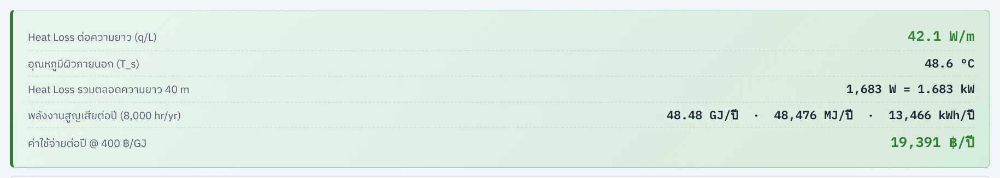
1) T_sat = 184.1 °C
2) ท่อเปลือย q/L = 544.8 W/m · T_s = 183.9 °C
3) ท่อเปลือย 251,038 ฿/ปี · condensate 39.24 kg/h
4) หุ้มฉนวน q/L = 41.7 W/m (T_s 48.5 °C) · ประหยัด 231,844 ฿/ปี (92.4 %)
✓ ผ่าน
ได้ตัวเลขตรงกัน = ใช้เครื่องมือเป็นแล้ว · ภาพแสดงผลสรุปหลังหุ้มฉนวนของโรงงาน B
สรุป 1 หน้า (พิมพ์ติดไว้ข้างคอมพิวเตอร์)
คู่มือใช้งาน · คำนวณการสูญเสียพลังงานในระบบส่งจ่าย (Distribution System Energy Loss Calculator) · ระดับ Free
30 / 30
1
เลือกหมวด
ความร้อน · ความดัน · การรั่วไหล · Moody
2
ข้อมูลท่อ
OD จริง · ความหนา · ความยาว · ชั่วโมง · ราคาความร้อน
3
ฉนวน + ผิว
ความหนา (0 = เปลือย) · ชนิด · ε ของผิวนอกสุด
4
สภาวะ
ความดัน barg / อุณหภูมิ · T แวดล้อม · h_out คำนวณ
5
🔢 คำนวณ 2 ครั้ง
ก่อนหุ้ม − หลังหุ้ม = ผลประหยัด
6
ความดัน / รั่ว
D ภายใน + ข้อต่อ · ขนาดรู + η หม้อไอน้ำ
7
บันทึก
💾 JSON · 📤 ส่งมาตรการ
อ่านผลแล้วตรวจ
☐
OD จริง ไม่ใช่ DN
☐
ราคาความร้อน = เชื้อเพลิง ÷ η
☐
ε ของผิวนอกสุด
☐
กดคำนวณหลังแก้ค่า
☐
T_s เทียบผิวที่วัดจริง
อ.หนึ่ง กลับทวี / Aj. Nueng Klubtavee
tripleeenergytools.com
tripleeenergytools.com